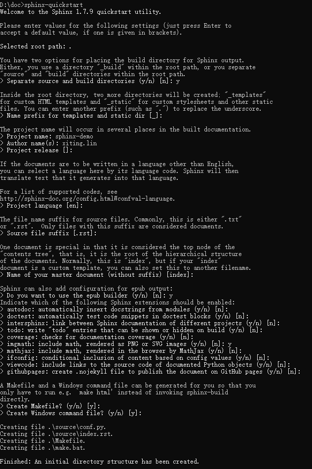
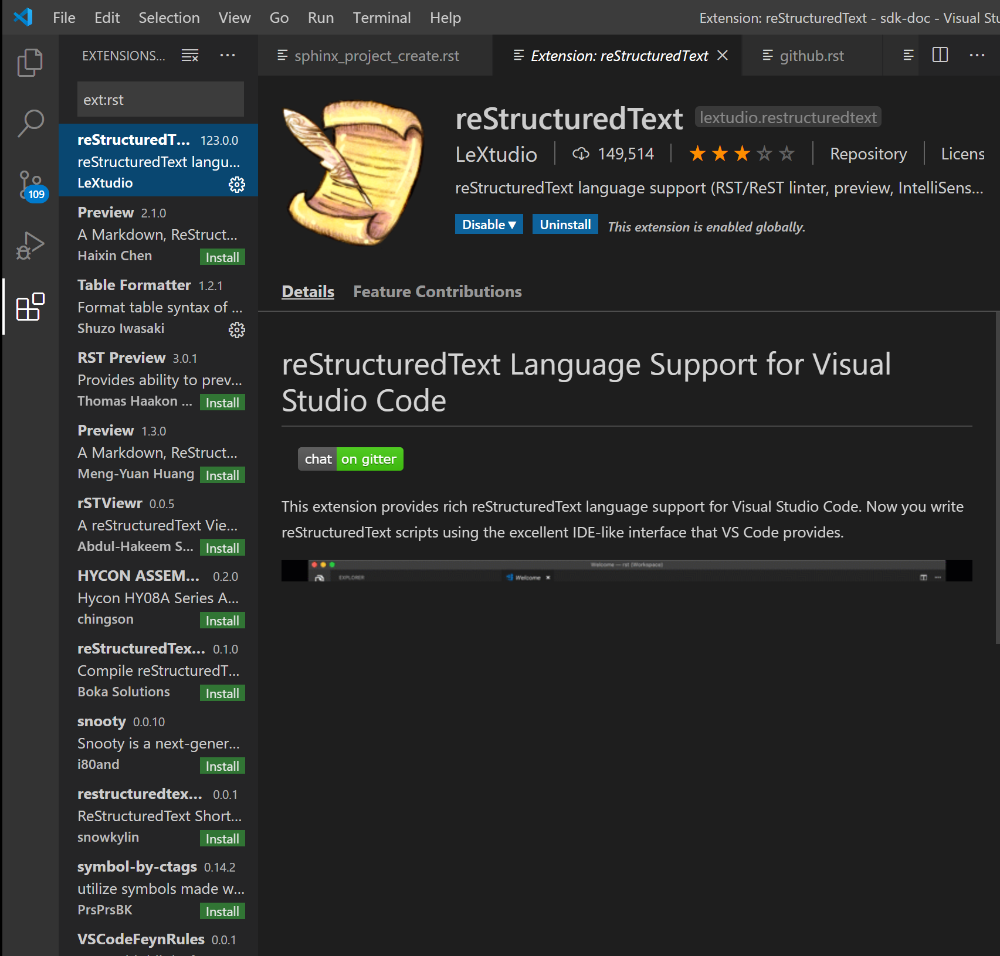
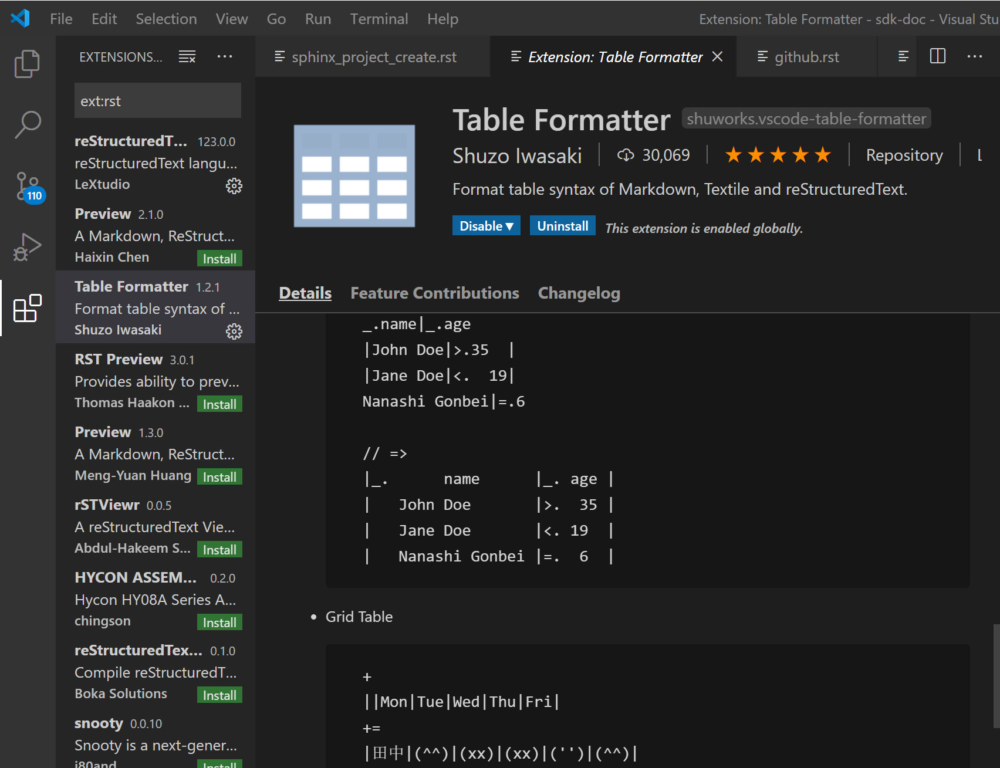
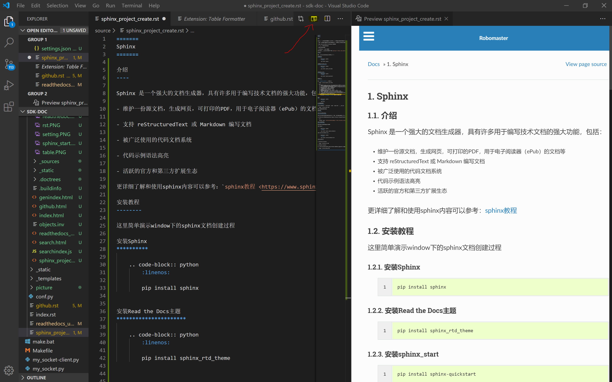

1. Sphinx¶
1.1. 介绍¶
Sphinx 是一个强大的文档生成器，具有许多用于编写技术文档的强大功能，包括：
- 维护一份源文档，生成网页，可打印的PDF，用于电子阅读器（ePub）的文档等
- 支持 reStructuredText 或 Markdown 编写文档
- 被广泛使用的代码文档系统
- 代码示例语法高亮
- 活跃的官方和第三方扩展生态
这里举几个用到sphnix的开源文档链接:
1.2. 安装教程¶
这里简单演示window下的sphinx文档创建过程
1.2.1. 安装Sphinx¶
1.2.2. 安装Read the Docs主题¶
1.2.3. 安装sphinx_start¶
1.3. 文档的创建¶
运行 sphinx_start 进行文档创建
Tip
- 文档根目录(Root path for the documentation)，默认为当前目录(.)
- 是否分离文档源代码与生成后的文档(Separate source and build directories): y
- 模板与静态文件存放目录前缀(Name prefix for templates and static dir):_
- 项目名称(Project name) : EvaEngine
- 作者名称(Author name)：AlloVince
- 项目版本(Project version) : 1.0.1
- 文档默认扩展名(Source file suffix) : .rst
- 默认首页文件名(Name of your master document):index
- 是否添加epub目录(Do you want to use the epub builder):n
- 启用autodoc|doctest|intersphinx|todo|coverage|pngmath|ifconfig|viewcode：n
- 生成Makefile (Create Makefile)：y
- 生成windows用命令行(Create Windows command file):y
一般只要设置 项目名称 作者 即可，其他默认回车
1.3.1. 编译¶
1.4. 文档编辑¶
1.4.1. reStructuredText介绍¶
reStructuredText（RST、ReST或reST）是一种用于文本数据的文件格式，主要用于 Python 编程语言社区的技术文档。
它是Python Doc-SIG（Documentation Special Interest Group）的 Docutils 项目的一部分，旨在为 Python 创建一组类似于 Java 的 Javadoc 或 Perl 的 Plain Old Documentation（pod）的工具。Docutils 可以从 Python 程序中提取注释和信息，并将它们格式化为各种形式的程序文档
Tip
这里列一个教程 reStructuredText入门教程 ，就不具体展开
1.4.2. sphitnx文档编辑器¶
这里介绍vscode来编辑sphinx文档
1.4.2.1. 安装 sphinx¶
1.4.2.2. 安装 restructuredtext-lint¶
1.4.2.3. 安装vscode插件¶
1.插件reStructuredText
{kind=link}
2.插件Table Formatter
由于reStructuredText做表格特别麻烦，这个插件可以帮助你做表格，只需要把关键的标记写对，其余的都会自动补全而且效果十分美观。
{kind=link}
1.4.2.4. vscode进行编辑¶
打开之前生成好的文件目录，点开预览窗口，即可边编辑文档边看效果
